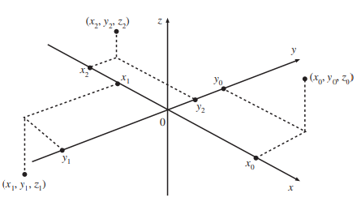

Chapter 2 The basics
2.1 Sets and Number Sets
In our utility maximization example, we considered which consumption options (\(x=\# donuts\) and \(y= \# coffee\)) that the student Alex can afford. As we have seen, there are several financeable consumption combinations \((x,y)\) for Alex to choose from. It makes sense to consider those consumption options that meet certain criteria as a set. Alex will maximize his utility by selecting the consumption combination that brings him the maximum utility from this set of consumption bundles available to him. Doch was ist eine Menge und wie kann man sie definieren?
Definition 2.1 (Sets) A set is a collection of objects, called elements. The set can be either a finite collection or an infinite collection of objects.
The set can be specified through:
- listing its elements using ” {” and ” }“, with the elements separated by commas (explicit representation):
\[M=\{x_1,x_2,\ldots\},\]
- giving a property that characterizes the elements (implicit representation):
\[M=\{x:P(x)\}\]
Example 2.1 (The set of even numbers between 1 and 11) The set of even numbers between 1 and 11 can be specified
- via an explicit representation: \[M=\{2,4,6,8,10\}\]
or
- via an implicit representation: \[M=\{x:x \text{ is an even number between 1 and 11}\}\]
If the object \(x\) is an element of the set \(M\), we write \(x\in M\), otherwise \(x\not\in M\).
In the case of Alex’s budget set, the implicit representation is used because writing down all the possible combinations would take too long.
Example 2.2 (Alex' consumption set) Given enough time, Alex can consume any amount (positive or zero) of coffee and donuts. Its consumption amount can then be written as follows:
\(C=\{(x,y):x\geq 0,y\geq 0\}\)
The set of consumption bundles with coffee and donuts that Alex can reach is defined as:
\(B=\{(x,y):xP_X+yP_Y\leq Budget\}\)
Then for \(Budget=200\), \(P_X=2\) and \(P_Y=4\) holds: \[(30;10)\in B\] \[(99;1)\not \in B \]
Now let’s say Alex wants to limit his consumption of sweet and not-so-healthy donuts. He doesn’t want to consume more than 30 donuts per month. Does this restriction change his consumption set? The set relations help us to find the answer.
Definition 2.2 (Subsets and equal sets)
If all elements of a set \(X\) are also elements of a set \(Y\), then \(X\) is a subset of \(Y\), formally: \[X\subseteq Y\]
Furthermore, if not all elements of \(Y\) are in \(X\), then \(X\) is a proper subset of \(Y\), formally:
\[X\subset Y\]
- Two sets \(X\) and \(Y\) are equal if they contain the same elements, formally: \[X=Y\]
That is: \(X=Y\Leftrightarrow X\subseteq Y\text{ und } Y\subseteq X\).
Example 2.3 (Sets and their subsets) Let \[\mathbb Z_+ = \{x:x \text{ ist eine positive ganze Zahl},\] \[A=\{x\in \mathbb Z_+:x\leq 11\}=\{1,2,3,4,5,6,7,8,9,10,11\}\]
Then, it holds: \(A\subseteq \mathbb Z_+\) and \(A\subset \mathbb Z_+\).
Now back to Alex and his self-imposed condition of no more than \(30\) eat donuts a month.
Example 2.3 (Alex's consumption set under the condition) His new consumption set is: \[C_{new} = \{(x;y):0\leq x\leq 30,y\geq 0\}\] It holds: \(C_{new}\subset C\).
2.1.1 Operations on Sets
Alex has another problem: his favorite donuts have become more expensive and cost now \(5\) euros. Nevertheless, there is good news also - a cup of coffee in the canteen costs only \(1\) euro. This changes Alex’s budget constraint. How can one compare the new situation with the situation before? This is where the set operations help us.
We define the universal set, here expressed with \(U\). This is the largest set we work with in any given context. The empty set or null set contains no elements, this is noted as \(\emptyset\).
For example, it makes sense for Alex’s decision to set the hypothetical consumption quantity \(C=\{(x,y):x\geq 0,y\geq 0\}\) to be the universal quantity. If Alex’s budget is \(0\) Euro, then his budget set is an empty set.
Definition 2.3 (Intersections and unions of sets)
The intersection of two sets \(X\) and \(Y\) is the set whose elements are in both \(X\) and \(Y\); formally:
\(X\cap Y=\{x:x\in X \text{ and } x\in Y\}\) 
If \(X\cap Y=\emptyset\), then \(X\) and \(Y\) are disjoint.
The union of two sets \(X\) and \(Y\) is the set whose elements are contained in at least one of the sets \(X\) and \(Y\); formally:
\(X\cup Y=\{x:x\in X \text{ oder } x\in Y\}\)
Exercise 2.1 (Set operations 1) Let \(\mathbb Z_+\) be the universal set, furthermore
\(X=\{x\in \mathbb Z_+:x\leq 20 \text{ and } x/2\in \mathbb Z_+\}\), as well as
\(Y=\{x\in \mathbb Z_+:10\leq x\leq 24 \text{ and } x/2\in \mathbb Z_+\}\)
What are \(X\cap Y\) and \(X\cup Y\)? What are \(X\cap \mathbb Z_+, X\cup \mathbb Z_+, Y\cap \mathbb Z_+\text{ and } Y\cup\mathbb Z_+\)?
Answer
\(X\cap Y = \{x\in Z_+: 10\leq x\leq 20\text{ and } x/2\in Z_+\}\), \(X\cup Y = \{x\in Z_+: x\leq 24\text{ and } x/2\in Z_+\}\), \(X \cap Z_+=X\),\(X \cup Z_+=Z_+\), \(Y \cap Z_+=Y\)and \(Y \cup Z_+=Z_+\)
In addition to the intersection and union of two sets, complement formation and set difference are often required.
Definition 2.4 (Complement and difference) The complement of a set \(X\) is the set of all elements contained in \(U\) but not in \(X\); Notation: \(\overline X\) or \(X^c\).
\(\overline X=\{x\in U:x\not \in X\}\) 
The difference \(X\setminus Y\), sometimes also \(X−Y\), is the set of all elements in \(X\) that are not contained in \(Y\):
\(X\setminus Y=\{x\in U:x\in X \text{ und } x\not\in Y\}\)
Exercise 2.2 (Set operations 2)
- Show via Venn diagram that \(X\setminus Y=X\cap\overline Y\)

Let \(\mathbb Z_+, X, Y\) be as in the previous exercise.
- What are the complements of \(\mathbb Z_+, X, Y\)
- What is \(\overline{X\cap Y}\)?
- What is \(\overline{X\cup Y}\)?
Answer
\(\overline{Z_+}=\emptyset\), \(\overline{X}=\{x\in Z_+: x\geq 21 \text{ oder } x \text{ odd }\}\), \(\overline{Y}=\{x\in Z_+: x\leq 9 \text{ oder }x\geq 25 \text{ or } x \text{ odd }\}\)
\(\overline{X\cap Y} = \{x\in Z_+: x\leq 9 \text{ or }x\geq 20 \text{ or } x \text{ odd }\}\), \(\overline{X\cup Y}=\{x\in Z_+: x\geq 25 \text{ or } x \text{ odd }\}\)
Let \(\mathbb Z_+, X, Y\) be as in the previous exercise.
- What is the difference \(X\setminus Y\)?
- What is \(Y\setminus X\)?
Answer
\(X\setminus Y =\{x\in \mathbb Z_+, x < 10 \text{ und } x/2\in\mathbb Z_+\}\)
\(Y\setminus X = \{x\in \mathbb Z_+: 20<x\leq 24 \text{ und } x/2\in \mathbb Z_+\}\)
Exercise 2.3 (Alex's consumption set and budget)

Alex’s consumption set is given as \(C=\{(x_1,x_2):x_1\geq 0,x_2\geq 0\}\).
The corresponding budget constraint set for Alex is \(B=\{(x_1,x_2):p_1x_1+p_2x_2\leq M\}\),
where \(x_1,x_2\) denotes the quantities of goods, \(p_1,p_2\) the prices and \(M\) the income.
Illustrate the following quantities in a diagram:
- \(B,C\)
- \(B\cap C\)
Interpret each of the sets.
Answer

2.2 Number sets
Definition 2.4 (Some number sets) The set of natural numbers is \(\mathbb N= \mathbb Z_+ = \{1,2,3,...\}\)
The set of integers is \(\mathbb Z = \{...,−3,−2,−1,0,1,2,3,...\}\)
The set of rational numbers is \(\mathbb Q=\{a,b:a\in \mathbb Z, b\in \mathbb Z\setminus\{0\}\}\)
Properties:
- The following applies: \(\mathbb{N}\subset \mathbb{Z}\subset \mathbb{Q}\).
- The set \(\mathbb {N}\) is closed under addition and multiplication, i.e. for all \(a, b \in \mathbb {N}\) the following applies: \(a + b \in \mathbb { N}\), \(a\in {N}\).
- The set \(\mathbb {Z}\) is closed uncdot b addition, subtraction and multiplication, i.e. for all \(a, b \in \mathbb {Z}\) the following applies: \(a + b \in \mathbb{Z}\), \(a - b \in \mathbb{Z}\), \(a \cdot b \in\) \(\mathbb {Z}\).
-
The set \(\mathbb{Q}\) is closed under addition, subtraction, multiplication and division (with the exception of division by 0), i.e. for all \(a, b \in \mathbb{Q}\) , c \(\neq 0\) holds:
\(a + b \in \mathbb{Q}\), \(a - b \in \mathbb{Q}\), \(a \cdot b \in \mathbb {Q}\), \(a/c \in \mathbb {Q}\).
examples
- The set \(\mathbb N\): number of employees in a company, number of customers in a company
- The quantity \(\mathbb Z\): Growth of customers or employees numbers (absolute)
- The quantity \(\mathbb Q\): Percentage of existing customers/employees working full-time
Exercise 2.4 (Number sets) Show by counterexample that \(\mathbb N\) is not closed under subtraction and division.
Answer
take \(4; 5\in\mathbb{N}\)
\(4-5=-1 \notin\mathbb{N}\rightarrow\mathbb{N}\) is not closed under subtraction
\(4 / 5\notin\mathbb{N}\rightarrow\mathbb{N}\) is not closed under subtraction division
Definition 2.5 (Irrational numbers) There are numbers outside of \(\mathbb Q\), the so-called irrational numbers. Example: \(\sqrt2\) is irrational.
The union of the rational and irrational numbers gives the set of real numbers \(\mathbb R\).
The following properties are assumed as axioms:
Completeness: for all \(a,b\in \mathbb R\) applies \(a+b\in \mathbb R\) and \(a\cdot b\in \mathbb R\)
Commutative laws: for all \(a,b\in \mathbb R\) applies \(a+b=b+a\), \(a\cdot b=b\cdot a\)
Associative laws: for all \(a,b,c\in \mathbb R\) applies \(a+(b+c)=(a+b)+c\) and \(a\cdot (b\cdot c )=(a\cdot b)\cdot c\)
Distributive law: for all \(a,b,c\in \mathbb R\) applies \(a\cdot (b+c)=a\cdot b+a\cdot c\)
Null element: the element \(0\in\mathbb R\) has the property \(a\in\mathbb R\) then \(a+0=a\) and (a=0 )
One element: the element \(1\in\mathbb R\) has the property \(1\cdot a=a\)
Inverse additive element: for each \(a\in \mathbb R\) \(−a\in \mathbb R\) has the property \(a+(−a)=0\)
Inverse multiplicative element: for \(a\in \mathbb R \setminus\{0\}\), \(\frac 1a \in \mathbb R\) has the property \(a\cdot\frac 1a=1\).
Definition 2.5 (Subsets on real numbers)
The set \(\mathbb R_{++}\subset \mathbb R\)
contains the (strictly) positive numbers. The following applies:
- \(\mathbb R++\) is closed under addition and multiplication.
- Exactly one of the following properties applies to each \(a\in\mathbb R\): \(a\in \mathbb R_{++}\) or \(a=0\) or \(−a\in \mathbb R_{++}\).
The set \(\mathbb R_+ = \mathbb R_{++}\cup \{0\}\) is the set of non-negative numbers.
Sometimes you need to compare the numbers or specify a property that is related to a number. In this case, inequalities are useful.
Definition 2.6 (Inequalities)
The strict inequality \(>\) and the weak inequality \(\geq\) are defined as follows:
If \(a+b\in \mathbb R_{++}\), then \(a>b\)
If \(−(a−b)\in \mathbb R_{++}\), then \(b>a\)
If \(a − b\in \mathbb R_+\), then \(a\geq b\)
If \(−(a−b)\in \mathbb R_+\), then \(b\geq a\).
As an example, if you plan to interview the employees with the properties
- at least 5 years of service (\(X\)),
- more than 1000 euros monthly earnings (\(Y\)),
- less than 10 sick days in the last year (\(K\)),
- the highest are 45 years old (\(Z\))
you can use inequalities to specify your target group as follows: \(X\geq 5,Y>1,K<10 \text{ and } Z\leq 45\).
Often one does not want to look at mere numbers, but rather at the deviations from a target value without considerring the direction of the deviation. In this case you need the amounts of these deviations.
Definition 2.7 (Absolute value) The absolute value (also absolute value, “sign killer”) of \(x\in\mathbb R\) is defined as
\(v=\begin{cases}x, &\text{ if } x\geq 0,\\ -x, &\text{ if } x<0\end{cases}\)
As an example, consider the deviations of monthly sales from the annual average:
- Month 1: \(−1250.2\) euros
- Month 2: \(−135.5\) euros
- Month 3: \(680\) euros
- Month 4: \(55\) euros
What is the mean deviation?
The amounts of the sales variances are: \(1250.2;135.5;680;55\) euros. The mean deviation is therefore: \(530.175\) euros. If you had determined the mean deviation without first taking the amount, positive and negative deviations would cancel each other out, so that the result could not be regarded as the mean deviation.
This is illustrated by the following triangle inequality.
Theorem 2.1 (Triangle inequality) For all \(x,y\in \mathbb R\) the following applies: \[|x+y|\leq|x|+|y|\]
Proof:
\(x\leq|x|\) and \(y\leq|y|\) apply, from which it follows:
\(x+y\leq |x|+|y|\).
Similarly: \(−x\leq|x|\) and \(−y\leq |y|\), so that \(−(x+y)\leq |x|+|y|\).
The absolute values of the sum of the deviations from month 2 and month 3 is \(544.5=|−135.5+680|\), which is smaller than the sum of the individual absolute values \(815.5=|−135.5| +|680|\).
2.3 Point sets in \(\mathbb R^n\)
Often one has the situation in which several objects or persons or their behavior have to be compared. The latter are represented by one or more values. We can always represent these individual values from \(\mathbb R\) or tuples of several values from \(\mathbb R ^ 2, \mathbb R^3,\ldots\) as points in the appropriate coordinate system. This makes it possible to determine the similarity of objects or people by measuring the distance between points.
- The real line \(\mathbb {R}\) is suitable if each object is described by only one number. This then marks a point on the number line:
Example 2.4 (Real line) The consumers Alex, Tina and Amy are compared with regard to their account balance (\(x\)). Alex has \(500\) euros, Tina has \(250\) euros and Amy has \(-600\) euros in the account. What do these account balances look like as points on the real line?
- The space \(\mathbb {R^2}\), defines the two-dimensional view via the Cartesian product:
\(\mathbb R ⊗ \mathbb R = \left\{ {(x,y) : x \in \mathbb R, y \in \mathbb R} \right\} =\mathbb R^2\)
Example 2.5 (Two dimensional real space) The consumers Alex, Tina and Amy are compared with regard to their account balance (\(x\)) and the change in their consumer spending (\(y\)) over the last month. Alex’s behavior is represented by the tuple (balance; change in consumer spending \(=(x;y)\)) \((500; 300)\), Tinas by \((250; -200)\) and Amy’s by \((-600; 200)\) described. What do the different consumer behaviors of these consumers look like as points in the coordinate system?
- The space \(\mathbb{R^3} \left\{ {(x, y, z) : x \in \mathbb R, y \in \mathbb R, z \in \mathbb R}\right\}\) enables the analysis of three-dimensional points.

Example 2.6 (Three dimensional real space) Alex, Tina and Amy as employees are shown in terms of their salary \(x\), change in productivity \(y\) and target achievement score \(z\). Their behavior is represented by the tuple (salary; productivity; goal achievement) \(=(x;y;z)\). Tina’s description is \((3; 2.5; 2)\), Alex \((-2; -5; -2.5)\) and Amy’s \((-3; 1.2; 1.5)\). What do the various characteristics of the employees look like as points in the coordinate system?
- The space \(\mathbb {R^n}\): allows the mapping of multidimensional points. For example, if you include other characteristics of employees. The visualization is difficult at this point, but the multivariate analysis of these points and the calculation of distance can be performed without any problems. \[ R^n = \left\{ {(x_1,x_2, ... , x_n) : x_i \in \mathbb R, 1 \leq i \leq n}\right\} \] Subsets of \(\mathbb{R^n}\): sets of points.
2.3.1 Intervals as sets of points in \(\mathbb{R^n}\)
Important sets of points in \(\mathbb {R}\) are intervals.
Example 2.7 (Intervals as point sets) For example, the HR manager of Alex, Tina and Amy could only consider employees with a negative salary score in the interval \(-5\) to \(-1\) in an evaluation. She would have a number of options to choose from. Should the employees with the score \(0\) be taken into account or are they still left out? So far there have been no salary scores beyond \(-5\). But should people with a lower score than \(-5\) also be included in the evaluation in the future? In the first case we would write the corresponding interval as \([-5;0]\), in the second - as \([-5;0)\) and in the third case (if yes) - \((-\infty ; 0)\) write down.
Accordingly, for \(a, b \in R, \ a < b\) one distinguishes:
limited quantities:
Closed interval: \(\left[ a, b \right] = \left\{ {x ∈ \mathbb{R} : a \leq x \leq b} \right\}\)
Half-open interval: \([a, b) = \left\{ {x ∈ \mathbb{R} : a \leq x < b}\right\}\) \((a, \infty) = \left\{ {x \in \mathbb{R} : a < x}\right\}\)
Open interval: \((a, b) = \left\{ {x \in R : a < x < b}\right\}\)
Unlimited quantities:
- Unlimited interval \([a, ∞) = \left\{ {x \in \mathbb R : a \leq x}\right\}\) \((a, \infty) = \left\{ {x \in \mathbb R : a < x}\right\}\)
- Down unlimited interval: \((−\infty, b] = \left\{ {x \in \mathbb R : x \leq b}\right\}\) \((−\infty, b) = \left\{ {x \in \mathbb R : x < b} \right\}\)
2.3.2 Properties of \(\mathbb R^n\): Distance
How could the HR manager now compare the employees Alex, Tina and Amy in terms of their salary \(x\), productivity change \(y\) and target achievement score \(z\)?. Their behavior has so far been represented by the tuple (salary; productivity; goal achievement) \(=(x;y;z)\). Tina’s description is \((3; 2.5; 2)\), Alex \((-2; -5; -2.5)\) and Amy’s \((-3; 1.2; 1.5)\). Which employees are most similar? It is useful here to find the Euclidean distance between the points representing Alex, Tina, and Emy.
Definition 2.8 (Euclidean distance) The Euclidean distance between two points \(a = (a_1, ... , a_n)\) and \(b = (b_1, ... , b_n)\) in \(\mathbb {R}^ n\), \(n \geq 1\), is defined as
\(d(a, b) =\) \(\sqrt{ \ \sum_{i=1}^{n} (a _{i} -b_{i}) ^{2} }\)
Example 2.8 (Pythagor) According to the Pythagorean theorem, the length of the straight line connecting \(a\) and \(b\) is \(d(a, b) =\) \(\sqrt{(a_{1}-b_{1})^{2} + (a_{2}-b_{2})^{2}}\)
The personnel manager calculates:
Example 2.9 (employee comparison) \[\begin{align*}d(Tina, Alex) &= \sqrt{(3-(-2))^2 + (2.5-(-5))^2 + (2-(-2.5))^2}\\ &= 10.074\end{align*}\] \[\begin{align*}d(Tina, Amy) &= \sqrt{(3-(-3))^2 + (2.5-1.2)^2 + (2-1.5))^2}\\ &= 6.1595\end{align*}\] \[\begin{align*}d(Alex, Amy) &= \sqrt{(-2-(-3))^2 + (-5-1.2)^2 + (-2.5-1.5))^2} \\ &= 7.446\end{align*}\]
So Tina and Amy are the most similar of the three employees in terms of the description of changes in salary, productivity and goal achievement, since the Euclidean distance between their characteristics is the smallest.
Exercise 2.5 (The Euclidean distance) Find the Euclidean distance between the following points:
\(2\) and \(3\) in \(\mathbb {R}\)
\((2; 3)\) and \((4; 1)\) in \(\mathbb {R^2}\)
\((2; 3; 4)\) and \((4; 1; −5)\) in \(\mathbb{R^3}\)
\((2; 3; 4; 5)\) and \((−2; 4; 1; −5)\) in \(\mathbb{R^4}\)
Antwort
1.\(\sqrt{(2-3)^2} = 1\)
2.\(\sqrt{(2-4)^2 +(3-1)^2 } =\sqrt{4+4} =\sqrt{8}\)
3.\(\sqrt{(2-4)^2 +(3-1)^2 + (4-(-5))^2} =\sqrt{4+4+81} =\sqrt{89}\)
4.\(\sqrt{(2-(-2))^2 +(3-4)^2 + (4-1)^2 + (5-(-5))^2}\)
\(=\sqrt{16+1+9+100} =\sqrt{126}\)
2.3.3 Properties of \(\mathbb R^n\): \(\epsilon-\)neighborhood
We need one more concept to determine if given points are “close enough” to each other. Later in the course we want to see if a sequence tends towards a certain point, or comes arbitrarily close to it. This “arbitrarily close” is also formalized with the help of the \(\epsilon-\)neighborhood.
Definition 2.9 (ϵ-neighborhood) Let \(\epsilon\) be a positive real number. The \(\epsilon\) neighborhood of a point \(x_0 ∈ R^n\) is defined as the set \(N_ \epsilon (x_0) = {x \in R^n : d(x_0, x) < \epsilon }\).
In other words, \(N_ \epsilon \left( x_0 \right)\) is the set of points whose distance to \(x_0\) is less than \(\epsilon\).
Example 2.10 (ϵ-neighborhood)
- \(N _\epsilon (2) = \left\{ x \in \mathbb{R : } \sqrt{(x-2)^2} < \epsilon \right\} = \left\{ x \in \mathbb{R} : \lvert x-2\rvert < \epsilon \right\} = (2- \epsilon ; 2+ \epsilon )\)
If \(\epsilon = 0.1\) is set, then it is all points in the interval \((1.9; 2.1)\). - \(N _\epsilon (2,3) = \left\{ ( x, y) \in \mathbb{R^2 : } \sqrt{(x-2)^2 + (y-3)^ 2} < \epsilon \right\}\)
This is the set of points in \(\mathbb{R^2}\) that lie within a circle of radius \(\epsilon\) around the point \((2; 3)\).
3. \(N _\epsilon (2,3,1) = \left\{ ( x, y, z) \in \mathbb{R^3 : } \sqrt{(x-2)^2 + (y -3)^2+(z-1)^2} < \epsilon \right\}\)
This is the set of points in \(\mathbb{R^3}\) that lie within a sphere of radius \(\epsilon\) around the point \((2, 3, 1)\).
The HR manager has determined that a productivity deviation of \(\epsilon = 0.5\) is an unusual development and can indicate that the employees concerned are overworked.
Example 2.10 (ϵ-neighbourhood in HR) If the average productivity score is \(1.5\) and \(\epsilon=0.5\) is specified, Amy’s score is still in the \(\epsilon\) environment of the average score and Tina’s scores and Alex - not. This can be seen by writing down the \(\epsilon\) neighborhood for the one-dimensional case: \[ N _{\epsilon=0.5} (1.5) = \left\{ x \in \mathbb{R : } \sqrt{(x-1.5)^2} < 0.5 \right\} = \left\{ x \in \mathbb{R} : \lvert x-1.5\rvert < 0.5 \right\} \]\[= (1.5- 0.5 ; 1.5+ 0.5 ) \] Since this interval is an open interval, Tina’s score of \(2\) is no longer part of it. The personnel manager will therefore have discussions with Alex and Tina about their professional stress.
2.4 Functions
We have already seen with Alex’s utility-budget representation how helpful it can be to express the problem using suitable functions. A functional form can also be very helpful in other contexts such as production and production costs to make optimal production decisions.
Now let’s take a closer look at how functions are defined and what types of functions are commonly used in a business or economic context.
Definition 2.10 (Function) Let \(X, Y \subset\mathbb R\). A function (also mapping) from \(X\) to \(Y\) is a rule that assigns exactly one element of \(Y\) to each element in \(X\).
The set \(X\) is called the domain of the function.
The set \(Y\) is called the codomain of the function.
Notation: If \(f\) is a function, then we write
\(f : X \rightarrow Y\) and \(y = f (x)\), \(x \in X\),
where \(y\) is called the image or the function value of \(f\) at the position \(x\).
Definition 2.11 (Inverse function) Let \(f : X \rightarrow Y\) with \(y = f (x)\).
If each element \(y \in Y\) is the image of exactly one point \(x \in X\), then the inverse function exists, written as \(f^{(−1)}\), and it satisfies the following equation : \[ {f}^{-1} \ ( y )= x.\]
Example 2.11 (Function and its inverse) Let \(y = f (x) = {x}^{2}\) with \(X = \mathbb{R^+}\). Then, \[{f}^{-1} ( y ) = \sqrt{ y}, \] because \(\sqrt{y} = \sqrt{x^2} = x\).
Let \(g : Y \rightarrow Z\) be another function with \(z = g( y )\).
Definition 2.12 (Composition) The composition of \(f\) and \(g\) is given by \[g \circ f : X \rightarrow Z \text{ with } z = g(f (x)) \]
Example 2.12 (Composition) \(f (x) = x + 2, \ g( y ) = {y}^{2}\) and \(g(f (x)) = {(x+2)}^{2}\).
2.4.1 Linear Functions
In the utility maximization example, Alex had the budget constraint \(x \cdot P_X + y \cdot P_Y = 100.\), which was expressed as a linear function \(y(x)=\frac{100}{P_Y}-\frac {P_X} {P_Y} x\) could be represented.
In addition, many cost functions can be modeled as linear functions of the quantities produced. In this case, the costs consist of a fixed amount \(b\) and grow proportionally to the produced quantity \(x\) with the factor \(b\), so that \(K(x) = ax+b\) .
Definition 2.13 (Linear function) Let \(a, b\) be real numbers. The function \(f : \mathbb{R} → \mathbb{R}\) with
\(f (x) = a \cdot x + b\), \(x ∈ \mathbb{R}\),
is a linear function.
Example 2.13 (Linear Functions) Linear functions: positive \(a\) in \((a)\) and \((c)\); negative \(a\) in \((b)\); \(b = 0\) in \((a)\) and \((b)\), positive \(b\) in \((c)\):

The parameter \(a\) determines the gradient of the linear function.
Let \(y_1 = a \cdot x_1 + b\), \(y_2 = a \cdot x_2 + b\), it follows \(y_2 − y_1 = a\ (x_2 − x_1)\), so that \(a = \frac{y_2-y_1}{x_2-x_1} = \frac{\Delta y}{\Delta x} .\) \(\Delta y\) denotes the “change in \(y\)”, \(\Delta x\) denotes the “change in \(x\)”.
The ratio \(\Delta y/\Delta x\) is the slope, \(a\) is the slope coefficient.
The parameter \(b\) is the \(y\)-intercept / ordinate-intercept / intercept.
Example 2.14 (Cost function and marginal cost function) The cost of a bicycle manufactory is €50,000 per month and €25 per bicycle. The cost function (in EUR) is \[ C(q) = 50,000 + 25q \]
The marginal cost, i.e. the cost of producing an additional bike, is \[C^\prime (q) = 25\] Because of the linearity, the marginal cost is €25 independent of the production level/amount \(q\) produced.
2.4.2 Quadratic Functions
Some cost functions cannot be represented by a linear function. Then the costs grow disproportionately to the quantity. To describe such costs one then uses quadratic terms in the quantity produced.
Definition 2.14 (Quadatic function) Let \(a, b, c\) be constant real numbers. A quadratic function has the form \[ y = a \cdot x^2 + b \cdot x + c, ~~x \in \mathbb {R}, a \neq 0 \]
Example 2.15 (Quadatic Functions) Quadratic functions: positive \(a\) in \((a)\); negative \(a\) in }((b)}):

The graph of a quadratic function is a parabola.
Example 2.16 (Squared cost function) We consider again the bicycle factory from the previous example. It is more realistic to assume that greater output comes with additional costs. For example, increased demand can increase the price of commodities. This is captured by an additional term, e.g. \(0.001 q^2\). This term is very small for small \(q\), but grows strongly with increasing production level \(q\). Now the cost function is
\(C(q) = 50,000 + 25q + 0.001q^2\),
with marginal costs
\(C^\prime (q) = 25 + 0.002q\). The marginal cost is €25.20 for a production of 100 bikes per week, rising to €45 for an increase in production to 10,000 bikes per week.
2.5 Power, exponential and logarithmic functions
Growth processes are usually neither linear nor quadratic in the variable time. Rapid growth well described using exponential and power functions.
During the corona pandemic, the number of infections was monitored very closely. Suppose every infected person infects two more people per week. Then the growth looks like this: At this point we need the definition and calculation rules for the exponents that can describe such a growth.
We write \({a}^{n}\) for the \(n-fold\) product of a number \(a\) with itself (\(n \in \mathbb{N}\)). The number \(n\) is called an exponent.
This can be extended to \(n \in \mathbb{R}\).
Theorem 2.2
\(a^n \cdot a^m = {a}^{n+m}\)
\(({a}^{n} ) ^m = {a}^{n \cdot m}\)
\(\frac{a^n}{a^m} = {a}^{n-m}\)
\(\frac{a^n}{a^n} = {a}^{0} = 1\)
Furthermore: \(a^n \cdot b^n = (a \cdot b)^n; a^n/b^n = (a/b)^n \ and \ {a}^{-n} = 1/a^n\).
Definition 2.15 (Power function) A power function has the form \(y = ax^b\), \(x \in \mathbb{R}\), \(a > 0\).
The parameter \(b\) is called exponent.
Note that the variable \(x\) acts as the base of the power function here.
Definition 2.16 (Exponential function) An exponential function has the form
\(y = ab^x\) , \(x \in \mathbb {R}\).
The parameter \(b\) is called the basis of the function.
Exponential functions capture growth effects (e.g. populations, money).
The Euler constant \(e = 2.718...\) is often used as the basis. (more later)
Note: The exponent is now the function variable.
Now if we want to invert an exponential function, e.g. to find out how many weeks it takes to reach a certain number of infected people, we use the logarithm function.
Definition 2.17 (logarithm function) If \(x = b^y\) , with \(b > 0\) and \(b \neq 1\), then \(y\) is the logarithm of \(x\) to the base \(b\), written as \(y = \log_b x\), \(x \in \mathbb{R}_+\)
The logarithm to the base \(e (10)\) is called the natural logarithm (decade logarithm), written as \(y = \ln \ x\) \((y = \log \ x)\).
The logarithm of \(x\) to the base \(b\) answers the question: “How many times do you multiply \(b\) by itself to get \(x\)?”
Theorem 2.2 (rules for logarithms) \(\log_b(xz) = \log_b\ x + \log_b\ z\)
\(\log_b(x/z) = \log_b \ x − \log_b \ z\)
\(\log_b(x ^a) = a \ \log_b \ x\)
Remark: From the last property it follows that \(\log_b \ x = \ln \ x / \ln\ b\) . Because: If you set \(y = \frac{\ln\ x}{\ln\ b}\) , then: \(\ln \ x = y \ \ln\ b = \ln(b^y )\). So \(b^y = x\) and therefore \(y = \log_b x\).
On the pocket calculator you can determine any logarithm using the natural logarithm.
The world population is growing. This process can be modeled with the help of an exponential function (albeit very simplified).
The following formula helps to connect the future population \(P(t)\) after \(t\) periods with the initial inventory \(P(0)\) and growth rate \(r\) per period:
\(P(t)=P(0)(1+r)^t\)
where \(r\) can be positive or negative. A negative \(r\) would mean that the population is shrinking. In the year \(2000\), the world population was about \(5.2 \ billion\) with \(r>0\), so it shows positive growth. Depending on which estimate is used, \(r \approx 1.5\) percent per year applies.
Suppose the population is growing exponentially and the growth rate is \(r \approx 1.5\) percent per year. How high should the population be in the year \(2025\) assuming \(5.2 \ billion\) in the year \(2000\)?
How long will it take for the world population to reach \(8\) billion?
2.5.1 Convexity and concavity
When we examined Alex’s utility function, we found that utility increases as consumption levels increase, but the slope decreases as consumption increases. It is assumed that all consumers exhibit such behavior and it is said that the typical utility function is concave.
Definition 2.18 (Concave function) The function \(f : D \rightarrow \mathbb{R}\) is concave if for all \(x_1,x_2 \in D\) and \(\lambda \in (0,1)\) is applicable: \(f (\lambda x_1 + (1 − \lambda )x_2) \geq \lambda f (x_1) + (1 − \lambda)f (x_2)\).
The function is strictly concave if the inequality is strict.

Notation:
\(\bar{x} = \lambda x_1 + (1 − \lambda)x_2\),
\(\bar{f} = \lambda f(x_1) + (1 − \lambda)f(x_2)\).
Geometrically, (strict) concavity means that the function value of each point \(\bar{x} \in \left[ x_1, x_2 \right]\) lies (strictly) above the line connecting \(x_1\) and \(x_2\) connects.
Examples of concave functions:
Linear functions \(ax + b\), for \(a,b \in \mathbb{R}\)
Power functions \(x ^a\) on \(\mathbb{R}_{++}\), with \(a \in [0,1]\)
Logarithm function \(\log(x)\) on \(\mathbb {R}_{++}\)
Example 1.3 (Utility function) If Alex consumes a fixed amount of donuts (e.g. \(30\)), his utility function only depends on the amount of coffee and is: \(U(y )=\sqrt{30} + \sqrt{y}\) Take \(y_1=2\), \(y_2=4\) and \(\lambda=0.5\), for example. Then \(\bar y=3\). \(U(y_1=2) = \sqrt{30} + \sqrt{2}=6.891439\), \(U(y_2=4) = \sqrt{30} + \sqrt{4}=7, 477226\) and \(U(\bar y) = \sqrt{30} + \sqrt{3}=7.209276\). Since a utility function is always concave, the following applies: \(U(\bar y)=7.209276\geq 0.5\cdot U(y_1=2) + 0.5\cdot U(y_2=4) = 7.184332\).
Definition 2.19 (Convex Function) The function \(f : D → \mathbb{R}\) is convex if for all \(x_1,x_2 \in D\) and \(\lambda \in (0,1)\) holds : \(f (\lambda x_1 + (1 − \lambda)x_2) ≤ \lambda f (x_1) + (1 − \lambda)f (x_2)\). The function is strictly (strictly) convex if the inequality is strict.
Notation:
\(x = \lambda x_1 + (1 − \lambda)x_2, f = \lambda f (x_1) + (1 − \lambda)f (x_2)\).
Geometrically, (strict) convexity means that the functional value of each point \(\bar{x} \in [x_1,x_2]\) lies (strictly) below the line connecting \(x_1\) and \(x_2\).
Examples of convex functions:
Linear functions \(ax + b\), \(a,b \in \mathbb{R}\)
Exponential functions \({e}^{ax}\) or \(ab^{x}\) with \(a \in \mathbb{R}\) and \(b>1\)
Power functions \({x}^{a} \ on \ \mathbb{R}_{++}\) with \(a < 0\) and \(a \geq 1\)
Powers of the absolute value \(\lvert x \rvert ^{a}\) on \(\mathbb {R}\) for \(a \geq 1\)
Example 2.17 (Corona infections) Infection numbers in the example with the corona pandemic, where each infected person infects two more people per week and there are initially around \(1000\) infected people, can be modeled using the function \(f(x) = 1000\cdot 2^x\). This is a convex function because it is an exponential function of the form \(ab^{x}\) with \(2=b>1\) and \(a=1000\).